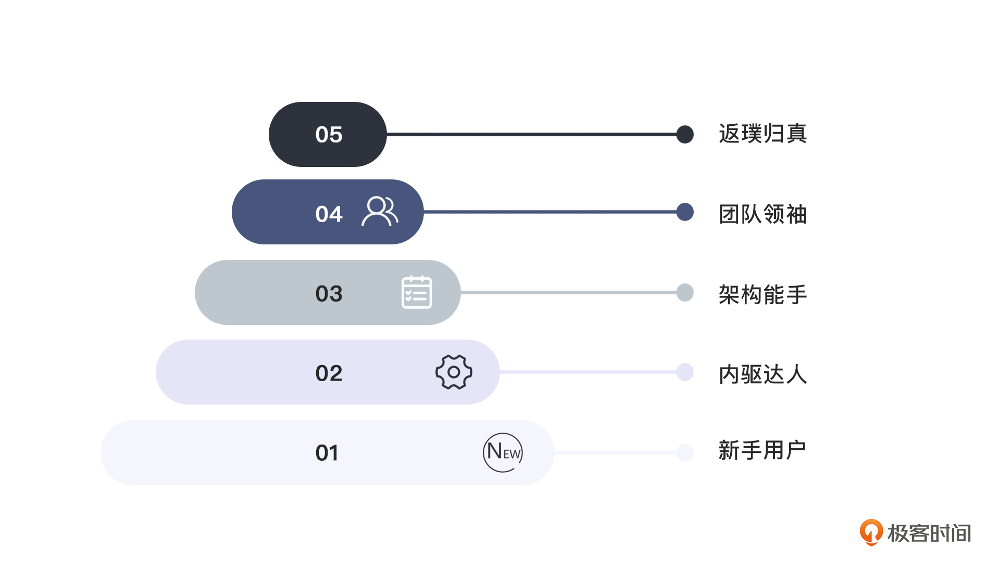

- 00 开篇词 如何突破“爬虫反爬虫”内卷之怪现状？.md.html
- 01 爬虫需求的诞生：我们是正经的软件工程师.md.html
- 02 爬虫的内卷和黑化：我们变得不正经啦.md.html
- 03 反爬虫的发展以及展望：我们也不是什么正经工程师.md.html
- 04 爬虫的首轮攻势：如何低调地拿到自己想要的数据？.md.html
- 05 反爬虫的应对之策：通用且基本的检测规则是什么？.md.html
- 06 爬虫攻势升级：分布式的意义在哪里？.md.html
- 07 反爬虫升级：如何判定你是个真人？.md.html
- 08 博弈的均衡：如何对抗道德的沦丧和人性的扭曲？.md.html
- 09 反爬虫概述（一）：高收益的后端能做哪些基本的事情？.md.html
- 10 反爬虫概述（二）：无收益的前端是怎么进行key处理的呢？.md.html
- 11 反爬虫概述（三）：前端反爬虫是怎么做信息收集的？.md.html
- 12 反爬虫概述（四）：前后端都不合适的时候如何进行处理？.md.html
- 13 反爬虫基础理论：这是唯一一节严肃的纯理论课.md.html
- 14 低耦合：如何快速下线反爬虫系统？.md.html
- 15 规则引擎：如何快速响应突发的爬虫需求？.md.html
- 16 验证爬虫：我到底要不要百分百投入？.md.html
- 17 招聘篇：如何写一个合适的JD？.md.html
- 18 如何搞定老板（上）：如何编造虚无缥缈的OKR？.md.html
- 19 如何搞定老板（中）：如何组建团队.md.html
- 20 如何搞定老板（下）：团队考核怎么做？.md.html
- 加餐 反爬虫的专家级鉴别力：用户习惯检测.md.html
- 春节加餐01 破解还是不破解，这是一个问题.md.html
- 春节加餐02 真实世界里，小心屠龙勇士变恶龙.md.html
- 春节加餐03 低调驶得万年船.md.html
- 答疑课堂 爬虫反爬虫调试对抗技巧以及虚拟机详解.md.html
- 结束语 达到理想不太易.md.html
- 捐赠
00 开篇词 如何突破“爬虫反爬虫”内卷之怪现状？
你好，我是DS Hunter。
这位朋友，你进来的时候，我就知道了，你一定遇到了不平凡的需求，而且很可能来自你那个不懂技术的老板。因为普通的工程师是很少关注爬虫和反爬虫这个冷门理论的，尤其是反爬虫。
我之前是一个反爬虫专家，现在到了一个大厂转型做了前端负责人，请记住这个转变，这在反爬行业是一个梗，后续要用。
由于一些个人原因，本课程选择了匿名编写。我的笔名是DS Hunter，你可以用任意方式理解DS，总之，我虽然是Hunter，但不是猎头，我是一个纯纯的技术人员。
我在反爬过程中积累了大量的技巧和新奇理论，并且一直都觉得“技术手段大同小异，但使用方法更为精髓”。毕竟，反爬手段可能谁都会，但是，怎么从众多的反爬虫手段中挑选一个来使用，怎么低成本地达到目的，这里的取舍，就变得没那么容易了。
接下来，我会带你走进一个不一样的爬虫和反爬虫的世界。
为什么要学这门课？
根据我的猜测，你关注反爬虫理论，可能是因为你是个爬虫工程师，你想知道反爬虫到底是怎么和你斗争的。也可能你饱受爬虫困扰，想要学习一些技术保护自己。
无论是哪一种情况，你都陷入了一个无止境的深坑，这个深坑的名字叫做“内卷”。“爬虫反爬虫”内卷了好多年了，未来也没有停止的趋势。这个困境一直伴随着你，无法消失。
这里我们一起回忆一下：“爬虫”和“反爬虫”的需求是什么时候开始变得重要起来的？仔细想想，似乎是随着Web 2.0起来的。
之前有很多爬虫，一般都是作为搜索引擎出现的。我们不但不反对这样的爬虫，还要想办法欢迎它们过来，毕竟这样的“搜索引擎优化”，对双方都是有益的。
而Web 2.0时代，那些乘着风口起来的人，一个个都将自己的数据视为护城河，大家本来倡导的数据共享渐渐变成了不肯和任何人分享。这虽然有违Web 2.0的精神，但是非常符合人性。那么最终的结果就是，大家通过爬虫技术来拿别人的数据，攻破别人的护城河。到后来，大数据横行，更是提升了数据的价值。我们的防守方，也就是反爬方，会不断调整防守方式来保护自己的数据。从此，这个行业就一发不可收拾了。
当然了，吐槽是没有意义的，内卷一旦开始，我们光举着道德的旗帜说“不要内卷啊”，是什么也改变不了的。我们能做的就是，努力提升自己，不要被别人卷输。
所以，这个课程主要就是教你如何卷赢对方。
当然了，因为课程的特殊性，你可以看到，这门课程虽然是以反爬虫为主，但是爬虫也会被大量提及。因此，我是又在卖矛又在卖盾。所以不要问我，“用你的矛去戳你的盾会发生什么”这类无聊的问题。我只能说，这取决于你自己对课程的掌握程度，以及自己感悟出的其它东西。
这门课的设计思想是什么？
在设计课程的时候，我和编辑一直在讨论一个事情：这个课程里，实战能占多少？这个问题困扰了我很久，我最终给了一个解释：实践会很多，但是实战并不多。
为什么？这里容许我小小地自我膨胀一下，用自己的课程来对比一下《孙子兵法》。
你可以看到，整部《孙子兵法》，并没有用任何一场战争进行举例，也就是说，没有给你分析一场战争是怎么从头打到尾的。但是几千年来，一直没有过时。
为什么？
兵者，诡道也。这个世界没有任何一场战争是可以用上一场的打法继续打的。因为在战场上，你面对的是活生生的人，而不是固定的套路。
如果我想不断地写实战相关的东西，当然是没问题的，甚至可以用来充字数。对我来说，这是稳赚不赔的买卖。但是，这样的一系列课程下来，你得不到任何干货。
事实上，我在酒桌上经常和别人吹牛：我们当时的反爬是如何做的，如何如何碾压对手，我们有多么多么牛。但是最后，曲终人散，盛筵难再。朋友分别的时候，他们回想起来我吹的那些牛，会觉得似乎也没有收获到什么。因此，我们的课程不需要太多实战。
是的，超人不依赖披风，课程不依赖实战。
所以，这个课程更倾向于培养思维层面的东西，为你提供一条条反爬虫的思路。虽然我也会通过几个实战的例子帮你融会贯通，但是直接实战，肯定会限制住你的想象力。甚至有些可能实战并不是什么光明的做法，我也不可能告诉你历史上是否真的有人用过。爬虫与反爬虫的战场瞬息万变，被几个实战的例子困住，实在是得不偿失。
最后，请相信这个行业的黑暗：任何一个做法无论多么不道德，只要是好用的，就一定会被用过，而且肯定不止一次。具体次数，取决于多少人知道怎么用。因此，有些知识会比较黑暗。虽然这段陈诉有劝退消费者的风险，但是我觉得还是得提前说明——提前高能预警，避免给你带来任何“惊喜”。
课程结构设计
在这个指导思想下，我把这门课划分成了4个模块，帮你实现爬虫反爬虫领域从新手到专家的突破。
1. 历史背景篇
也叫导学篇。主要介绍爬虫反爬虫的历史，以及一些小故事。
以史为镜可以知兴替。同样，爬虫反爬虫的历史，以及一些有意思的小故事，可以帮你轻松、快速地理解技术的来龙去脉。
尤其是，这么多年过去了，爬虫技术虽然在不断发展，但总体思路其实并没有什么变化。站在历史长河的一端回望，你就可以更深刻地了解爬虫反爬虫，那后续的学习也就是自然而然的了。
2. 理论与实践案例篇
这一部分是整个课程的核心。如果你时间紧天分高，那么学完这部分内容，其实就算达成学习这门课的目标了，也就是：做为一个独立的非管理岗位的爬虫或者反爬虫工程师，我应该了解哪些知识，这里，你是没什么问题了。
这一篇主要是介绍爬虫和反爬虫的基础理论，以及部分实践案例。出于一些法务考虑，实践案例主要是以反爬虫为主，并且一般以故事形式出现。不要去追究发生在什么企业里，无故事王国总是充满了故事。
何况我相信，即使你是一个爬虫工程师，你更关注的也是反爬虫，而不是爬虫如何爬，对吧？而且知道了如何反爬虫，就自然知道如何爬了。
3. 项目实战篇
这个部分主要会列举几个实战的例子。就像我刚刚说的，反爬的单个实战，参考意义极弱，因此这里的实战，主要是指如何在系统层面进行实战，而非与反爬的单个缠斗。可以说，学完第二个模块的时候，你在反爬虫领域就可以达到60分的水平了，不过你会满足于此吗？
项目实战篇存在的意义，就是帮助你把第二模块中学到的知识运用到实战中，融会贯通，发起向100分的冲刺。
有一句话可能比较拗口，但是等学完你就会理解，那就是：反爬虫里，最重要的就是如何识别爬虫。但是，最难的，永远不是识别爬虫。
别急，我们再把这句话反过来再说一次：反爬虫里，最难的肯定不是识别爬虫。但是，最重要的，永远是识别爬虫。
这两句话描述了相同的意思，但是你一定有着不同的感受。这样的感受，会贯穿我们整个课程——不仅仅是项目实战篇。请一定要牢记。
4. 进阶篇
你可能会说了：等等，不是说我已经向满分冲刺了吗？怎么还要继续？
这样理解吧，假设我们有期末考试的话，那么出题范围一定是到三就结束了。学完二，考试能及格。学完三，大概能达到九十五分。
不过，即便你的单兵作战能力已经达到了极致，难道就不会产生成为将领的想法吗？这五分，就是从单兵作战到团战的跨越，更是从技术到管理团队的跃迁。进阶篇，就是为了帮助你打破发展上限，开启反爬虫团队作战的新模式。
所以，这里就是管理技能以及团队组建等知识，也就是“反爬是如何组建团队的”。毕竟了解对方是如何组建团队的，是不是也是一种“知己知彼”？我只能说这么多了。
当然，如果读完了觉得难以理解，也没关系，这并不影响你日常与爬虫对抗，但总有一天，你会需要它的。
这门课适合我吗？
了解了这门课程能学到什么内容之后，你的另一个困惑可能是：这个课程是否适合我？
首先我们看下做反爬虫的人是如何划分层次的：

- 第一层：重视如何区分具体每一个爬虫，最好有人手把手教。
- 第二层：能自己主动识别一个未知的爬虫，即使网上搜不到办法，也能自己创造办法识别。
- 第三层：更关注系统设计、扩展相关的知识。
- 第四层：更关注如何组建团队。
- 第五层：一切都不是问题了，这个时候，返璞归真，发现最关键的还是如何识别爬虫。于是专心搜索这方面的知识。
对于这门课来说，其实是会覆盖到二、三、四层的全部用户的。而如果你是第一层用户，那么你可以通过本课程提供的第二层知识，自行学会，还可以找到自己区分爬虫的办法。至于第五层，我想说的是：你是大佬，也许我要向你学习。
写在最后
由于“爬虫和反爬”是一个创新领域，所以很多定义还是很模糊的。甚至你的公司内部可能都不用“爬虫”和“反爬”这些词，可能是“抓取”和“反抓取”。为了后续的统一，这里就和你一起定义一下它们吧：
- 爬虫：使用任何技术手段，批量获取网站信息的一种方式。关键在于批量。
- 反爬虫：使用任何技术手段，阻止别人批量获取自己网站信息的一种方式。关键也在于批量。
- 误伤：在反爬虫的过程中，错误地将普通用户识别为爬虫。误伤率高的反爬虫策略，效果再好也不能用。
- 拦截：成功地阻止爬虫访问。这里会有拦截率的概念。通常来说，拦截率越高的反爬虫策略，误伤的可能性就越高。因此需要做个权衡。
- 资源：机器成本与人力成本的总和。- - 引用来源：《携程：关于反爬虫，看这一篇就够了》
其实这些定义并不复杂。你看完后会发现：当我们在讨论爬虫的时候，是讨论战略意义的爬虫，而不是单独的一个小爬虫是否能通过。同理，讨论反爬虫的时候，也是战略意义上的反爬虫，而不是赌气式的反爬虫。这点一定要清晰明确。
做反爬其实和战争差不多，有的时候要闪电出击，有的时候要龟缩示弱。而且一定要记住，不打无意义的战争。同时，反爬也是一个很腐蚀人心智的行业，很多人在做了反爬之后，学会了各种坑蒙拐骗的技巧，整个人都变得不好了——这也是我选择写这个课程的一个原因。除了讨论各种技术以外，我真心希望，通过这个课程，能让所有的反爬工程师都学会一件事，并应用于工作以及生活中，那就是：“我就是想站着，还把钱挣了。”
推理到爬虫工程师，就是：“我就是想堂堂正正，还把工作完成了。”
好了，最后的最后，我也希望你来讲讲，你有没有一些有趣的反爬虫经历、你对爬虫反爬虫的看法是什么，欢迎在留言区分享你的思考感悟和学习心得，咱们一起交流讨论。
© 2019 - 2023 Liangliang Lee. Powered by gin and hexo-theme-book.